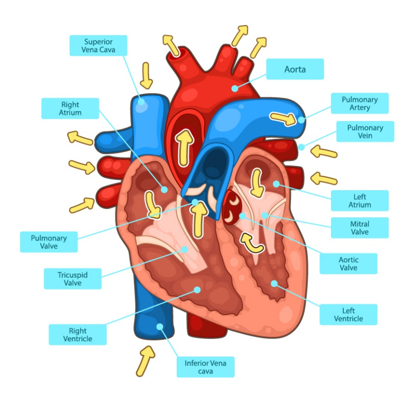

ระบบหมุนเวียนเลือด

● ความสำคัญและหน้าที่
- ระบบหมุนเวียนเลือดทำหน้าที่ลำเลียงออกซิเจน สารอาหาร และฮอร์โมนไปยังเซลล์ พร้อมนำคาร์บอนไดออกไซด์และของเสียออกจากร่างกาย รวมทั้งช่วยควบคุมอุณหภูมิและรักษาสมดุลของร่างกาย
● องค์ประกอบของระบบหมุนเวียนเลือด
1) หัวใจ
- หัวใจมี 4 ห้อง ทำหน้าที่สูบฉีดเลือด โดยด้านขวาส่งเลือดที่มีออกซิเจนน้อยไปปอด ส่วนด้านซ้ายรับเลือดที่มีออกซิเจนสูงและส่งไปส่วนต่างๆในร่างกาย
2) เลือด
- เลือดประกอบด้วย พลาสมา เม็ดเลือดแดง และเกล็ดเลือด ทำหน้าที่ลำเลียงสาร ป้องกันเชื้อโรค และช่วยให้เลือดแข็งตัว
3) หลอดเลือด
- แบ่งเป็น หลอดเลือดแดง หลอดเลือดดำ และหลอดเลือดฝอย ทำหน้าที่ลำเลียงเลือดและแลกเปลี่ยนสารกับเซลล์
● การไหลเวียนเลือด
- เลือดที่มีออกซิเจนน้อยจากร่างกายจะเข้าสู่หัวใจด้านขวา จากนั้นถูกส่งไปยังปอดเพื่อรับออกซิเจนและปล่อยคาร์บอนไดออกไซด์ เมื่อเลือดได้รับออกซิเจนแล้วจะกลับเข้าสู่หัวใจด้านซ้าย ก่อนสูบฉีดไปยังส่วนต่างๆในร่างกาย
● การดูแลระบบหมุนเวียนเลือด
- ควรรับประทาอาหารที่มีประโยชน์ ออกกำลังกายสม่ำเสมอ พักผ่อนให้เพียงพอ และหลีกเลี่ยงควันบุหรี่หรือพฤติกรรมที่ส่งผลเสียต่อหัวใจและเลือด